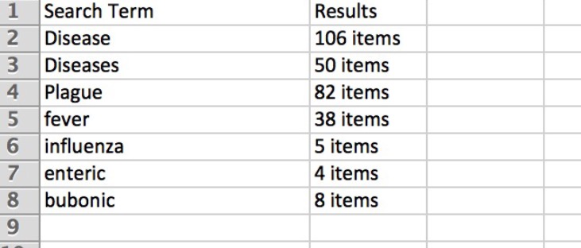
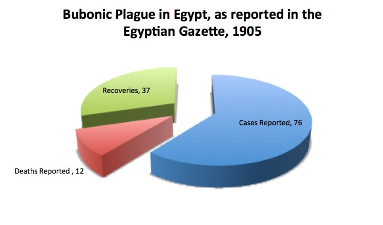
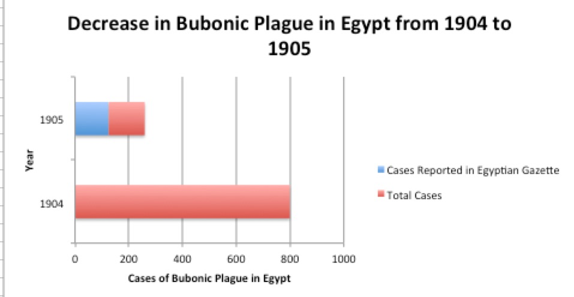

The Bubonic Plague
The Egyptian Gazette is full of so many different topics at hand and has so many interesting articles, advertisements, and financial tables. One topic that is very prevalent throughout the newspaper is disease. This specific topic is interesting to look at because diseases in 1905 are very different from present day diseases. The use of a simple query search was done pertaining to different types of diseases. The //div[@type="item"][contains(., 'insertword')] was used to search for a list of all item-type divs throughout the entire Egyptian Gazette. The simple search included different words such as “diseases”, “illness”, and “fever” which were used to produce results relating to diseases during the year of 1905. The results from this search then revealed other terms such as “plague” or “enteric” through the process of clicking through the results and reading through each individual item-type div that included passages about “diseases”, “illness”, or “fever”. From there another simple search was done using the same div but inserting more specific words like “plague” or “enteric”. A table, shown in figure 1, was created to compare and contrast the amount of results returned for each specific term. For example, there were 82 results for the word “plague” and 4 for the word “enteric”. Therefore the table exposed that the Plague was a more prevalent disease in the Egyptian Gazette. This brought about a serial question pertaining to disease. “How often did the Egyptian Gazette report specific cases of the Plague in 1905? And how many cases were specifically reported compared to the actual amount of cases that occurred?”

Although the simple search returned 82 results pertaining to the Plague, this number itself did not reveal specific details about the Plague. This search narrowed down the entire Egyptian Gazette contents to the 82 articles that contained information about the “Plague”. It was through the process of clicking through each individual result one by one and reading the different articles about the “Plague” that exposed more information that could potentially answer the serial question. Some of the item-type divs had details regarding different cities that had specific reports of the “plague”. One common item-type div titled “Bubonic Plague” was used to report the different specific cases of the Plague and deaths, and recoveries of the disease. It was usually worded something like: “Yesterday's plague bulletin records a fresh case, a death in hospital, and a cure at Suez, and a cure at Port Said.” From these details a simple table was constructed with the categories “where the Plague was reported”, “amount of specific cases reported”, “amount of deaths reported”, and “amount of recoveries/cures reported”. For each new place mentioned in the articles a cell was created for it. For example, cases of the Plague in Alexandria had been mentioned multiple times throughout the newspaper articles so there was “18” under “amount of specific cases reported”, “6” under “amount of deaths reported”, and “15” under “amount of recoveries/cures”. There were 21 different places that were mentioned having reported specific cases of the Plague. This table was used to add up the amount of cases, deaths, and recoveries throughout Egypt during 1905. A pie chart was then created to display the overall amount of Plague cases, deaths, and cures. Depicted in the pie chart, in figure 2, the blue portion being “cases reported” shows there were 76 all together. As for the green portion it reveals there were 37 “recoveries reported” and for the red there were 12 “deaths reported”. This diagram reveals the overall 125 specific cases of the Plague reported. This answers the “How often did the Egyptian Gazette report specific cases of the Plague in 1905?” With the answer being 125 specific cases, the curiosity as to how many actual cases occurred during 1905 was brought about.

The question “How many specific cases were specifically reported compared to the actual amount of cases that occurred?” was answered in a similar way to the first question. From the simple search using //div[@type="item"][contains(., 'Plague')] the 82 results that were read through revealed not only specific cases mentioned but also the overall number of actual cases that occurred. In the article “Bubonic Plague” from August 25, 1905 it states: “The total number of cases from January 1 to date amounts to 258, as compared with 804 during the corresponding period of last year”. In other words, this article reveals that there were 258 cases overall. Compared to the 125 cases that were specifically reported in the Egyptian Gazette there were 258 cases. This answers the question that compared to the actual amount of cases there were 133 cases that were not specifically reported throughout the newspaper. Whether the cases were not specifically reported or if they were just not entered into the Egyptian Gazette is unknown. However, the query search was able to narrow down the entire Egyptian Gazette to articles specific to the Bubonic Plague. This made it possible to discover the details necessary for answering the serial question pertaining to the Bubonic Plague.
As for table that includes the different places that had incidents of the Bubonic Plague, it is interesting to look at and compare the overall results. Not only was the pie chart created from this data, individually breaking up the different cities is an interesting approach. The city with the most cases reported was Alexandria. This data was interesting to look at after the table was completed. When going through the different places that had cases of the Plague, it looked as if Suez was going to be the highest number. This was thought because at the beginning of reading through the results from the query search Alexandria only had a few cases of the disease. As time progressed more and more were being added to the cell for “Alexandria”. Another interesting observation I noticed was that although Alexandria had the most cases reported of the disease, it had “15” recoveries. This number is a very high outlier for the “Recoveries” category considering the second highest number being “6” and most other being “1”. The “Recoveries” in Alexandria were 40.5% of the overall recoveries of the disease for the year of 1905.
Another observation made during this query search was how the data changed over time. As the year progressed there were fewer and fewer cases reported of the Bubonic Plague. This means that the outbreak of the disease was improving within time. From 1904 to 1905 there was a major decrease in the number of diseases reported. This was interesting to see because the amount of reports from 1904 being “799”. The amount for 1905 was “258” this data itself shows the dramatic decline between the two years. In figure 3 “Decrease in Bubonic Plague in Egypt from 1904 to 1905”, it shows the actual data compared side by side in a bar graph to show the dramatic decrease. This bar graph also emphasizes how there were not specific cases of the plague for 1904, just 1905. Although a number was given for 1904 there was not any places or actual incidents reported. In blue you can see that this shows the amount of cases reported in the Egyptian Gazette compared to the other end of the bar which is red. This indicates that the Egyptian Gazette only reported specific cases for around half of the actual case that occurred. However, the bar for 1904 is entirely red because there was no specific cases reported for the year of 1904 just an overall number given.

Overall the serial questions chosen gave better insight to the Egyptian Gazette regarding the Bubonic Plague. These questions emphasized how prevalent the Bubonic Plague was during this time and by how much the amount of cases reported improved. The first table showed how many different times the word “plague” was in the newspaper compared to other diseases or even the word “disease” itself. The word “plague” appeared 82 times compared to the 50 times “diseases” appears in the text. The data retrieved from the query search in the second table provided enough feedback to be able to break down place by place and even differentiate the cases, deaths, and recoveries recorded within the text. From the original query search of //div[@type="item"][contains(., 'Plague')] I was able to locate the actual date that there was no plague within Egypt at the time. October 23, 1905 there was “NO MORE PLAGUE”. This was very interesting to see the numbers go from 799 to 0 within just two years. The graphs and tables created from the data retrieved from the query search displayed the prevalence of the disease and how often it was actually reported. Although November 9, 1905 there was another case of the plague reported it still was eye opening to see the dramatic decline. Because the use of a simple query, much reading, and breaking down data into tables and graphs, this made information about the Bubonic Plague throughout the entire Egyptian Gazette very accessible and easy to sort through.
Johanna Eugenio
Student
The author, a student at Florida State University, was enrolled in the digital microhistory lab in fall 2016.